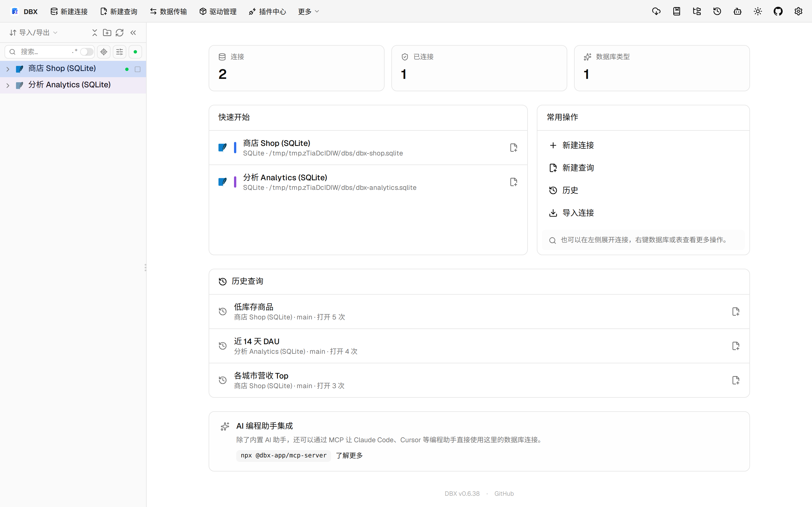
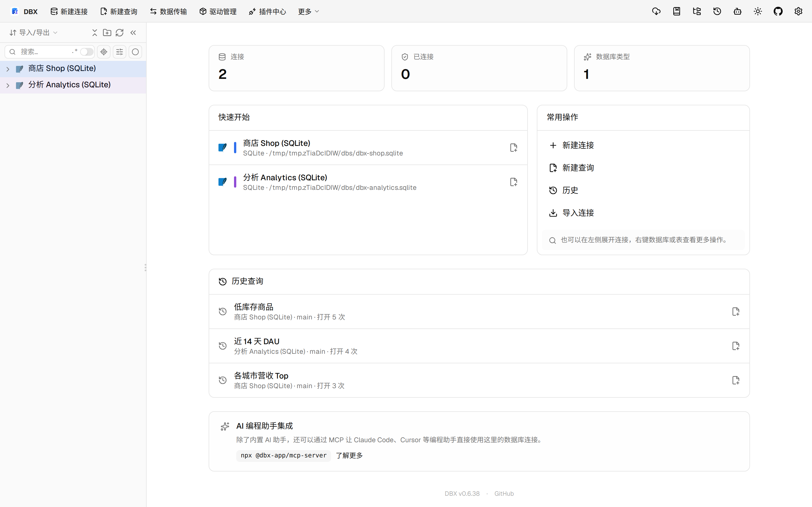

#11547 界面预览
commit 671bb49 · 回到 PR · 在 Oracle / OceanBase Oracle 的表结构页里新增了“编辑主键”内联编辑器，可按列顺序调整或清空主键，并在预览后展示受影响对象、DDL、执行结果和恢复 SQL。后端同时接入了主键预览/执行接口，支持 OceanBase 的 MODIFY PRIMARY KEY 路径及 Oracle 的替换流程与失败读回。
⚠️ 这次录制有 6 步没能按计划执行；带 ⚠️ 的截图拍摄于步骤失败之后，画面未必是说明文字所描述的状态。
红线是鼠标走过的轨迹，红色圆环是一次点击；底部文字是这一步在做什么。多个场景各自从应用初始状态开始。空格暂停，← → 逐段查看。
 ⚠️ 结构页打开主键编辑器 · 订单表结构页中的主键编辑入口
⚠️ 结构页打开主键编辑器 · 订单表结构页中的主键编辑入口

⚠️ 结构页打开主键编辑器 · 这里会显示 Oracle / OceanBase Oracle 的主键编辑器，但当前沙盒没有这类连接，因此只能展示入口位置

Oracle 主键编辑区域 · 这里会显示 Oracle / OceanBase Oracle 的主键编辑器，但当前沙盒没有这类连接，因此只能展示入口位置